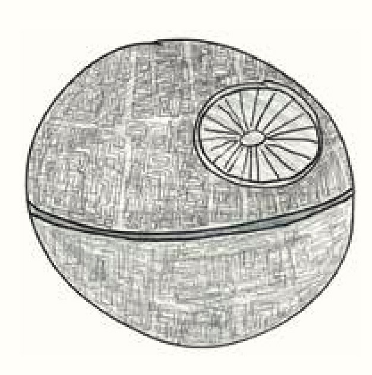
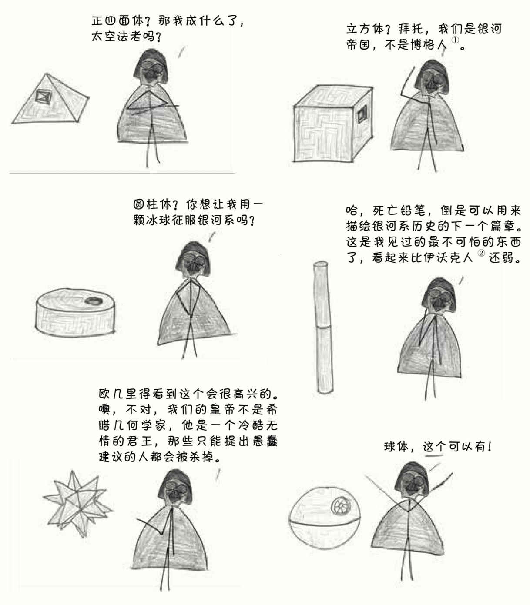
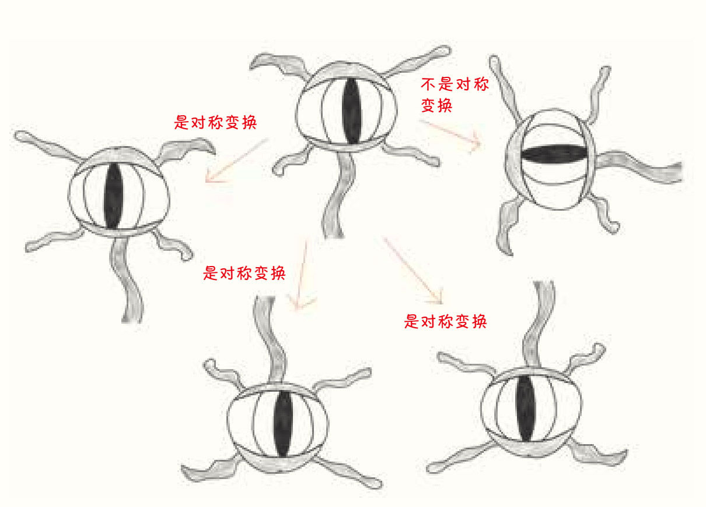
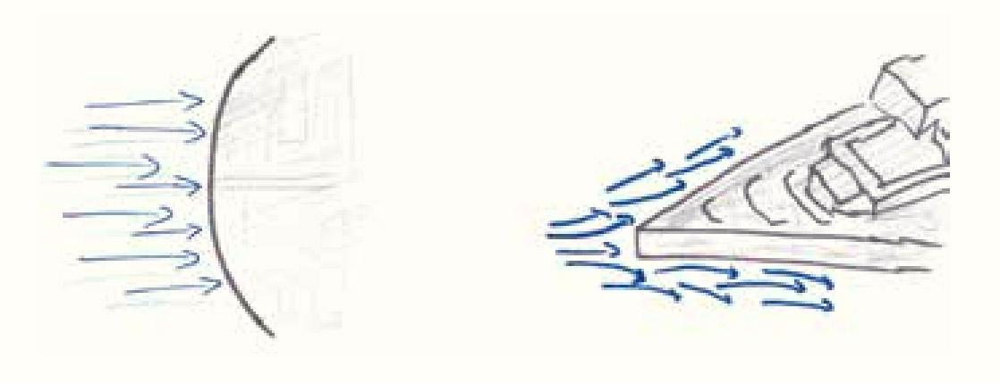
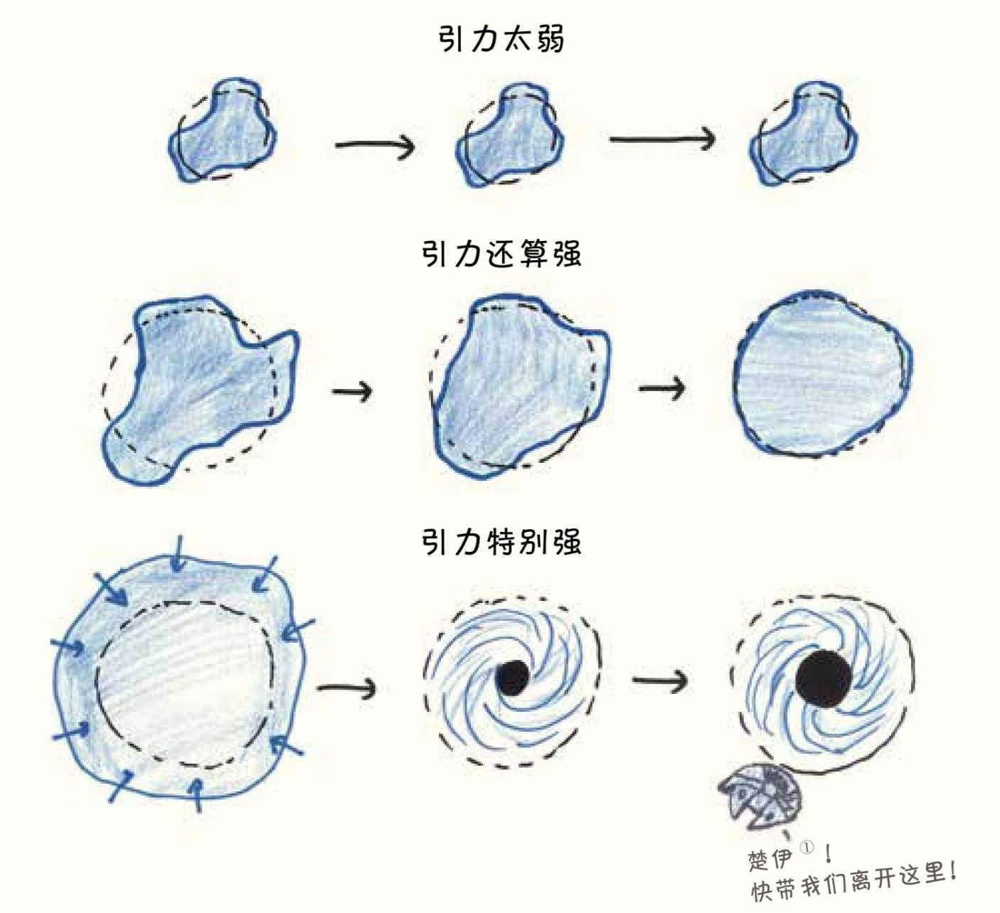
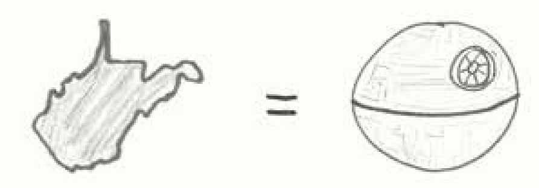
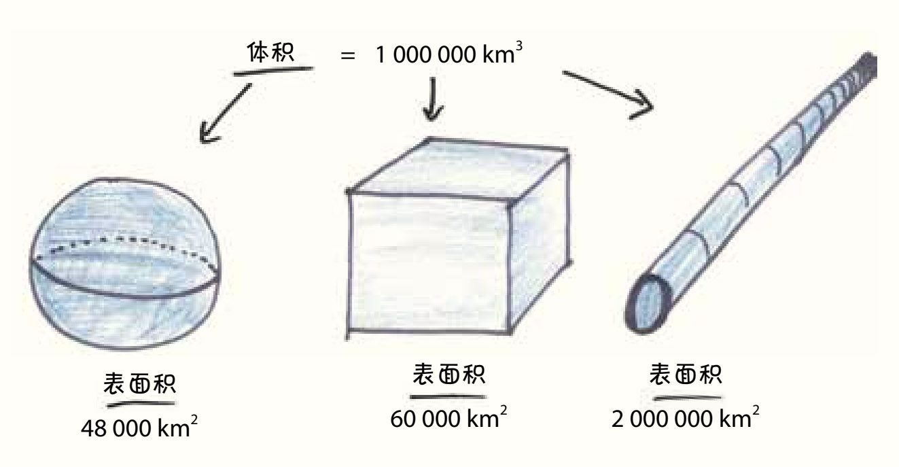
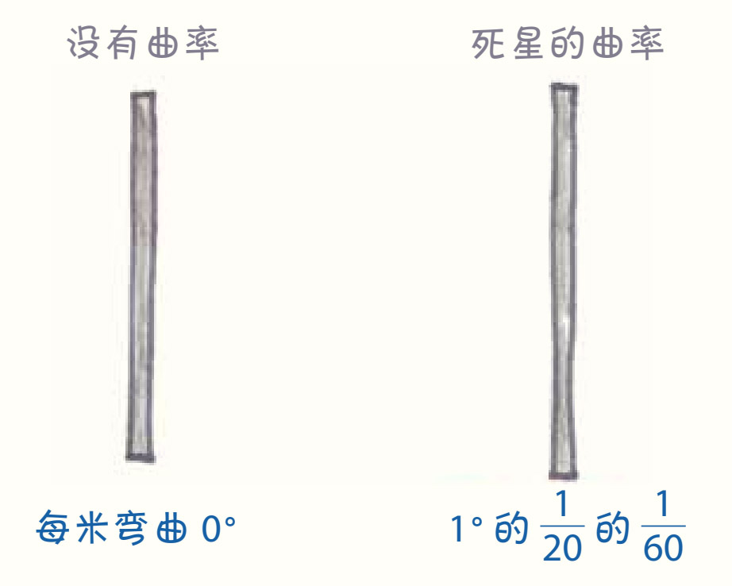
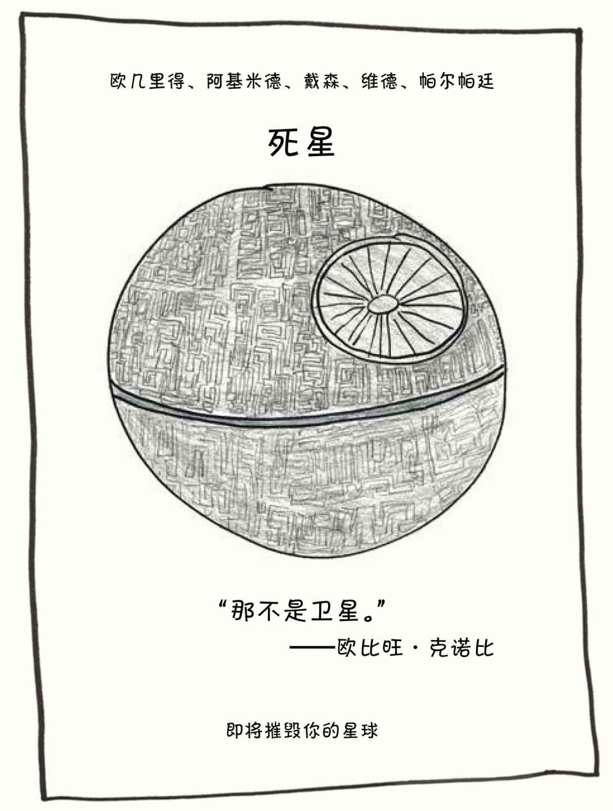
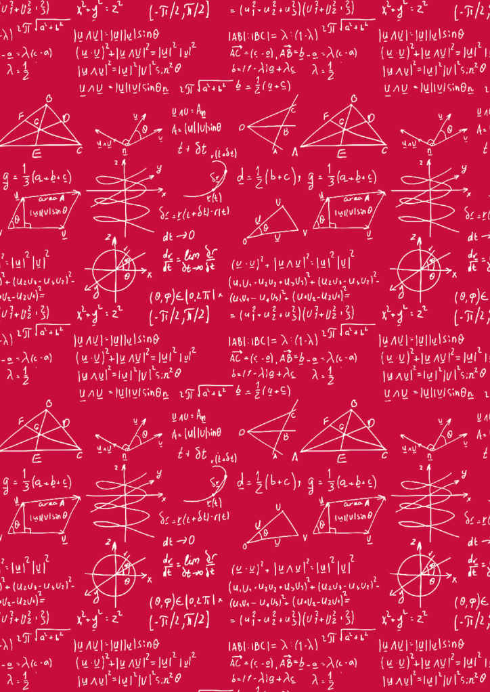

在几何学的历史上，电影《星球大战》中的死星恐怕是最伟大的建筑工程了。尽管在电影中，死星最后以毁灭告终，但在结局到来之前，这个由银河帝国建造的卫星大小的战斗空间是令整个银河系闻风丧胆的。死星的外观是近乎完美的球体，它的美纯粹得摄人心魄，它的直径长达160千米，配备了能摧毁行星的超级激光炮。不过话说回来，即使是这个用于威慑银河系的庞然大物，也不得不乖乖听命于一个更高的统治者：几何学。
几何不会屈服于任何人，即使是邪恶残暴的银河帝国也不例外。
在这一章中，我召集了当年负责建造死星的团队，一起复盘了这个历史上最具争议的固体背后的设计过程。1在谈到死星的几何结构时，他们说出了建造巨型太空站需要考虑的几个问题：
尽管死星的建造团队中有充满聪明才智的建筑师、工程师，还有高级星区总督塔金（Grand Moff Tarkin），但他们谁也不能对着几何学指手画脚。2相反，他们必须运用自己的聪明才智，在几何学的限定条件下工作。接下来，就是他们设计死星的过程。
注意：为了提高可读性，我删掉了黑暗尊主达斯·维德令人恐惧的呼吸声。
高级星区总督塔金
我们的目标：用有史以来最大的人造天体结构震慑整个银河系。我们的资金几乎没有上限，这要感谢在税收问题上雷厉风行的皇帝。不夸张地说，天有多大，我们就能造多大的空间站。所以现在大家要讨论的第一个问题是：这个东西应该是什么样的呢？
银河帝国的几何学家
他们告诉我要找到一个简单、基本的设计，看起来要壮观、威严，能吓哭机器人、吓尿赏金猎人。与发表论文相比，这项任务可谓是异常艰巨。
高级星区总督塔金
那个可怜的几何学家花了一个月的时间冥思苦想，画出了各种草图，提出了各种设计理念……都被维德尊主一一否决了。
黑暗尊主达斯·维德
六棱柱？我们要建立的是邪恶帝国还是蜜蜂王国？
银河帝国的几何学家
尽管我备受挫折，但还是很感激维德尊主的批评，这都是有建设性的意见。和许多有远见卓识的人一样，他是一位严格的管理者。
黑暗尊主达斯·维德
真是个废物！

①博格人（ Borg），《星际迷航》系列里的大反派，是半有机物半机械的生化人。他们身体上装配有大量人造器官及机械，大脑为人造的处理器。
②伊沃克人（Ewok），《星球大战》中的一个种族，是披毛的智慧两足生物。他们的文明仍处于石器时代，精通森林生存技巧和滑翔翼、投掷器等原始科技制品的建造。
银河帝国几何学家
最终，我们确定了一个基本的设计目标：对称。
在生活中，很多人会随意地使用这个词，但在数学中，“对称”是有精确定义的：物体或图形在一定变换条件下保持不变的现象。
例如，伍基人（《星球大战》中的一个种族，是毛发浓密的高大生物。他们形象粗野，但足智多谋、诚实可靠。下图所画的就是伍基人的形象）的脸有一种对称变换方式，如果你在竖直方向翻转他的脸，不会有什么变化。但如果你想做其他的变换动作，比如说把他的脸旋转90°，或水平翻转他的脸，他的五官就完全重新排列了，你要真的这么做了，伍基人可能也会把你的五官打乱。
有着长长触须的沼泽居民代亚诺加（《星球大战》中的一种垃圾寄生生物，遍布于大型帝国军事设施与军舰的垃圾系统里）——有时你也会在垃圾收集站看到他们——则有三种对称变换：水平翻转、竖直翻转，还有旋转180°。3

高级星区总督塔金
为什么我们如此追求对称？因为美的本质就是对称。
就比如说脸吧，没有人的脸是完全对称的，每个人多少都有些高低耳、大小眼、歪鼻子，但通常脸部越对称，人就越漂亮。这听起来有些奇怪，但我们不得不承认，数学也是一种美学。
在死星的设计中，我们要想办法创造一种像“超模脸”那样令人窒息的美。
银河帝国的几何学家
那天，黑暗尊主维德一把将我的设计图从桌面扫落，愤怒地咆哮道：“我要更多的对称性！”可是我们已经考虑到二十面体了，它有120条对称轴。我还能怎样呢？然而这时，我职业生涯，不，我人生中的高光时刻出现了，我想到了世界上最对称的形状。
黑暗尊主维德
为什么他一开始不能想到球体呢？真是迟钝，浪费了我们这么多时间和精力。
高级星区总督塔金
难题还没解决呢。我们要在北半球安装摧毁星球的激光炮，装上激光炮之后对称性就被破坏了，它将不再是一个完美无瑕的圆。
银河帝国的几何学家
我对安装这件武器的事持保留意见。我的意思是，你们认为哪个震慑作用更大呢？是星星点点的激光秀，还是无限数量的对称轴？
高级星区总督塔金
现在，我们又遇到了一个问题。你们可能会说，那就迎难而上啊。
先听我说说吧，在过去，人们都觉得歼星舰的设计很酷，它们拥有棱角分明、线条流畅的外观，简直就是银河系牛排刀，摧毁星球就像用刀刺破氢气球那样轻而易举。我一直以为它的吸引力是美学上的，但后来我才知道它的设计是出于实用性的考量，而它背后的原理给我们的球体带来了很大麻烦。
银河帝国的物理学家
不论一个飞行员的驾驶技术有多好，飞机在飞行的过程中都会不断地受到撞击。当然，我说的是空气分子的撞击。
在飞行中，空气分子的运动方向最好能和飞机的表面平行，这样就没有空气阻力了，空气就像在另一条路上穿梭的车流，不会对飞行造成什么影响。最差的情况是空气分子的运动方向都和飞机表面呈90°，它们会垂直撞上飞机的表面，这样飞机就要承受巨大的空气阻力。所以，飞机的前端不会设计成大而平的迎风面，否则它飞起来的时候就会像你抱着一块巨型的广告牌穿过迎面而来的人群一样艰难。
所以，歼星舰选择了锥形的设计，前端是尖的，迎风面很小，当它在空气中穿梭时，空气分子大多数都会从旁边掠过，尽管它们不会完全与舰身表面平行，但已经足够接近平行了。而我们的死星则恰恰相反，它的形状是空气动力学的噩梦。当死星在空气中飞行时，空气分子几乎是在完全垂直的方向上撞击它庞大的表面的。

银河帝国的工程师
设想一下，当你的朋友们在玩扔纸飞机的游戏时，你没有加入他们，而是决定扔桌子。如果你希望桌子能飞到房间对面，那你一定要耗费很大力气把它扔出去，这可不容易。
高级星区总督塔金
最初，我们希望死星可以直接降落在其他星球表面，在穿过星球的大气层后摧毁一两片大陆，然后通过扬声器播放《帝国进行曲》。
这样的设想在我们选择球体后便宣告破产。在空气动力学的限制下，我们不得不做出了一个艰难的决定，让这个太空站只待在真空的宇宙中，这样就没有了空气阻力的困扰，当然，音乐也没有了。
黑暗尊主维德
这是一个非常大的牺牲，但宇宙的领袖就该有这样的魄力。
高级星区总督塔金
还没等我们喘口气，又一个问题横在了我们光辉的征程之上：我们的物理学家坚持认为，死星应该像凹凸不平的小行星一样。
银河帝国的物理学家
放眼银河系，你看看哪些天体是球状的？都是那些硕大又笨重的东西，比如恒星啦，行星啦，一些比较大的卫星啦。现在再看看那些小一点儿的，密度也没那么大的物体，比如小行星、彗星、尘云什么的，它们都是歪歪扭扭的，像奇形怪状的马铃薯。
这不是巧合，这是万有引力造成的必然。我来从头讲讲这个道理：我们的死星太小了，不能成为完美的球体。
高级星区总督塔金
你应该看看黑暗尊主维德的脸色。
黑暗尊主维德
我正要破土动工一项邪恶历史上最雄心勃勃的建筑工程，一个穿着白大褂的四眼科学家却告诉我它太小了，你说我难道不该生气吗？
银河帝国的物理学家
我不怎么能言善辩，但是物理学原理在这儿明摆着呢。根据万有引力定律，每个物体对其他物体都存在吸引作用，这个物体的质量越大，对其他物体的吸引力也就越大。
在太空中，如果我们把一堆材料混合在一起，它们中的每一部分都会和其他的部分互相吸引，逐渐聚集在一个三维平衡点——质心的周围。随着时间的推移，外围的材料和突起的地方都会被其他部分的引力拉向这个中心，直到它达到最终的平衡形状：一个完美的球体。
但是，要达到这样的状态，这个物体必须拥有足够的质量。否则，内部的引力就不足以征服那些隆起的地方。所以，大的星球会逐渐形成球体，但是小的卫星只能和马铃薯一个形状。

①Chewie，楚巴卡（Chewbacca）的昵称，楚巴卡是伍基人战士，“千年隼号”的大副。——译者注
黑暗尊主维德
我想知道，是不是每个物理学家都这么放肆无礼？我是不是现在就应该把科学家全都杀了，以免将来再遇到他们？
银河帝国的物理学家
一个物体究竟要多大才能变成球形呢？这取决于它是由什么材质做成的。冰可以在直径为400千米的状态下变成球体，因为它的可塑性比较好。相比之下，石头就硬多了，在直径小于600千米的情况下，内部的引力是不足以让它变成球形的。4对于银河帝国的钢铁来说，因为在制作时要求承受的力更大，它们的硬度更强，所以变成球形就需要更大的直径了，直
径至少要到700至750千米。
而死星的直径呢？只有140千米5，还差得远。
高级星区总督塔金
在黑暗尊主维德快要把物理学家掐死时，我突然想到一番蒙混过关的说辞。我说：“各位，这是一件好事啊！这就意味着别人看到我们的人造球形空间站时，会下意识地以为它比实际大得多。这样，在不耗费任何成本的情况下，死星看起来增加了两倍！”另外，我还指出，根据物理学家的说法，内部引力还是在我们的掌控之中的，只要我们愿意调整死星的尺寸——当然，我们也可以随时掐死物理学家。最后，维德尊主松开了物理学家，物理学家也学会了说话的智慧。
银河帝国的物理学家
我们都明显地看到维德尊主的脸色好看多了。嗯，你应该也能看到的，他的面具仿佛在微笑。不管怎样，他很喜欢“死星看起来比实际大得多”这个说法。
黑暗尊主维德
我知道世界上有一种可怕的海洋生物，它可以通过膨胀成球体恐吓敌人。没错，我要把死星称为“天空中的河鲀”。
高级星区总督塔金
唉，我不是没有向维德尊主提过建议，让他不要再用“天空中的河鲀”这个比喻，但你们都知道他是怎样的人，一旦他做了决定，其他人哪劝得动？
高级星区总督塔金
如果在电影里见过死星，你可能会觉得那里到处都是帝国冲锋队员(4)的身影，他们在死星上排布得密密麻麻，就像在潜水艇里一样挤来挤去。
哈哈，事实上，死星是我去过的最空旷寂寥的地方。
银河帝国的户口调查员
如果把机器人也算进来的话，死星上一共有210万人6。死星的半径是70千米，表面积大概是62 000平方千米。假设所有人都在地面活动，人口密度为30人每平方千米，也就是每五个足球场大小的土地上只会有一个人。换句话说，这个人口总数和密度与地球上的美国西弗吉尼亚州差不多。想知道社交生活在死星上是怎样的吗？想象一下飘浮在太空中的西弗吉尼亚州就可以了。

银河帝国的冲锋队队员
唉，不得不说有时候是很孤独。你可能巡逻一整天都见不到一个人，甚至连机器人也见不到。
银河帝国的户口调查员
实际情况其实更糟，毕竟不是每个人都愿意待在地面上的。在空间站里，从地面到地下4 000米都适宜居住，每4米为一层，一共有1 000层。难以想象吗？那就想想这个飘浮在太空中的西弗吉尼亚州吧，假设那里布满了煤矿，人们分散地住在从地面到地下4 000米的地方。平均下来，每
一层的人口密度大概是每40平方千米有1个人。在地球上唯一能与之相比的地方，就是丹麦的格陵兰岛了。
银河帝国的冲锋队队员
你知道最让人受不了的是什么吗？他们竟然让我们60个人睡一个房间！每间宿舍只有三个厕所和两个洗澡间。如果你想让人做噩梦，其实不用费那么大劲儿摧毁他们的星球，只要给他们看看每天早上浴室外排的长队就行。
皇帝可以负担得起一个造价几十亿美元的太空站，我却在空间站里睡三层的上下铺，上个洗手间还要走几百米？哼，想起这些我还是很生气。
高级星区总督塔金
别抱怨了，死星本来就不是用来住人的，我们不关心人员生活的舒适程度。在死星上，所有人和机器，包括超物质反应室、亚光速引擎、超光速推进器，都只是空间站真正用途的支撑系统罢了，一切都服务于超级激光炮。
银河帝国的几何学家
没错！这是我们说球体是完美形状的另一个原因！在给定体积的前提下，使用球体形状可以得到最小的表面积。如果你要建造一个容器用于装载什么巨大的东西，比如一个毁灭星球的激光器，那么采用球体设计最节省材料。

银河帝国的工程师
我就知道几何学家会说球体形状可以省钱，因为建造同样体积的立方体要比球体多用24%的钢材。这是一个典型的数学家思维：都是理论中得来的，不考虑实操性。
作为工程师，我们可不希望建造球形的空间站，因为带曲线的建筑工程很难做！即使是在曲线形的房间里都很难安排家具，你就看看沙发怎么摆吧。
当然，死星非常大，人在里面时，可能不会注意到它的边缘是曲线，内部东西的摆放几乎不会受什么影响。但是在建造的时候，材料的曲率让我偏头痛了好几年。我们需要每米钢材弯曲0°0′3″，这个曲率比每千米弯曲1°的情况还要小。
真是太可怕了。这样的曲率低到根本无法用肉眼看出来，但是每一块钢板都要为此特别定制。
高级星区总督塔金
弯曲的钢材……呃，快别提这个了。我还记得，有家供应商整整一年都在向我们提供笔直的钢材，根本没有弯曲，还以为我们不会发现。事实上，我们一开始还真的没发现。直到有一天，黑暗尊主乘着航天飞机过来巡视，问我们：“这个滑稽的鼓包是怎么回事？”我们才发现钢材有问题。这个意外让我们的工程进度倒退到了几个月前。当然，最后那个供应商的下场比我们可惨多了。
看看有什么不同！

黑暗尊主维德
愚蠢的奸商，就算想坑客户，也不该坑我邪恶帝国。
银河帝国的几何学家
就像我之前说的，球形可以减少表面积、节省材料，但我也得承认它存在一些缺点。
高级星区总督塔金
大多数原材料都是直的，清理那些浪费的边角料也是一件令人头疼的事儿。
银河帝国的清洁工
处理空间站垃圾的基本方法很简单：丢掉就可以了。但是球体空间站有着最小的表面积，这就意味着空间站的大部分远离地面，我们的垃圾槽需要长达几十千米。我组织了一个垃圾回收运动，但是人们只是把全部东西都转存到了垃圾捣碎机那儿，包括食物残渣、钢材废料、活的义军俘虏……你总得考虑一下死星的可持续性发展吧。
银河帝国的工程师
还有个问题久久萦绕在我的心头——供热。这里可是外太空，外面是非常冷的，如果需要保存热量，球体空间站是个不错的选择。最小的表面积意味着最小的散热面，也就是最小的热量损失。但是很显然，我们把工作做得太好了。根据早期的模拟数据显示，死星过热了。
银河帝国的建筑师
我们必须处理掉过多的热量，所以我增加了散热装置。这东西不大，就几米宽，可以把热量释放到太空中，这样问题解决了。
不过我完全没有想到……
后来义军拆掉了散热口，从散热口进攻，摧毁了死星……7
银河帝国建筑师的代理律师
正如记录所显示的，调查小组可以确认，死星是被一个有问题的反应堆摧毁的，这个反应堆不是我的当事人设计的，我的当事人只不过设计了那些散热装置，这些装置成功地实现了将空间站中多余热量排放到太空的目的。
黑暗尊主维德
那些东西也成功地将质子鱼雷引入了死星。
高级星区总督塔金
我们的死星太空站在建造之初就经历了各种坎坷，最后还是走向了悲剧的结局。它造价高昂，效率低下，最后还被义军同盟那群乌合之众摧毁了。
但是呢，我还是忍不住为那个巨大光辉的球体感到骄傲。
远远望去，它就像有一个陨石撞击坑的卫星。当你靠近时，那几何形状完美得令人窒息：无数的对称轴，表面规整的分区，黑色的巨型赤道堑壕……
银河帝国的几何学家
死星实现了一种诡异的融合：它的体积如此之大，它一定是自然的天体，但它的形状如此完美，又不可能是自然形成的。它令人不安，引人注目，让人胆战心惊。这就是几何带来的力量。
黑暗尊主维德
根据以往的经验，敌人往往能带给我们最好的启发。当我们亦敌亦友的伙伴欧比旺喊出 “那不是卫星”的时候，我就知道死星的海报口号该是什么了。

